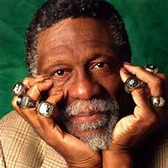
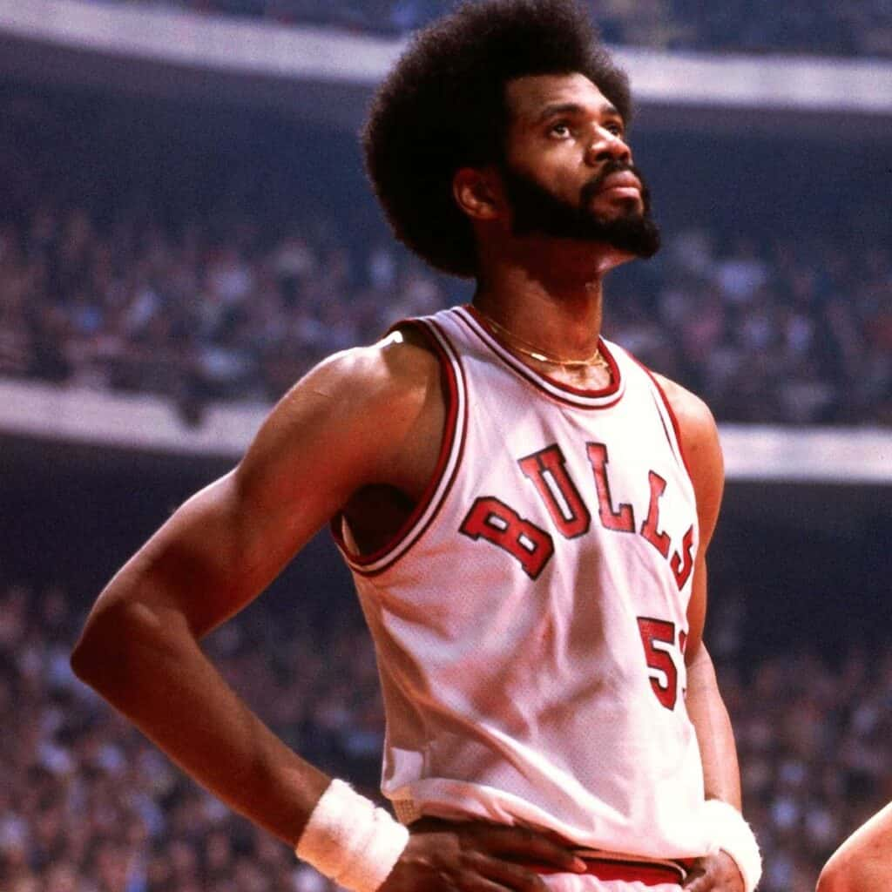

<!DOCTYPE html>
<html lang="eng">
  <head>
    <meta charset="utf-8" />

    <title>Basketbal Legacies Explained</title>
    <link rel="stylesheet" href="style.css" />
  </head>
</html>
<body>
  <div class="header">Basketball Legacies Explained</div>
  <nav class="menu">
    <a href="homepage.html">Home</a>
    <a href="scoutingreports.html">Scouting Reports</a>
    <a href="referencelinks.html">Reference Links</a>
    <a href="aboutpage.html">About</a>
    <a href="contactpage.html">Contact</a>
  </nav>
  <div class="content">
    Here is where the magic happens. Down below you will find several scouting
    on great players of the past in great detail.
  </div>
  <h2>Bill Russell</h2>
  
  <h3>Report</h3>
  <h3>Career Statistics</h3>
  <h3>Legacy and Impact on the Game</h3>

  <h2>Dwight Howard (2004-current)</h2>
  
  <h3>Report</h3>
  <h3>Career Statistics</h3>
  <h3>Legacy and Impact on the Game</h3>

  <h2>Chris Paul</h2>
  
  <h3>Report</h3>
  <h3>Career Statistics</h3>
  <h3>Legacy and Impact on the Game</h3>

  <h2>Artis Gilmore</h2>
  
  <h3>Report</h3>
  <h3>Career Statistics</h3>
  <h3>Legacy and Impact on the Game</h3>
</body>
